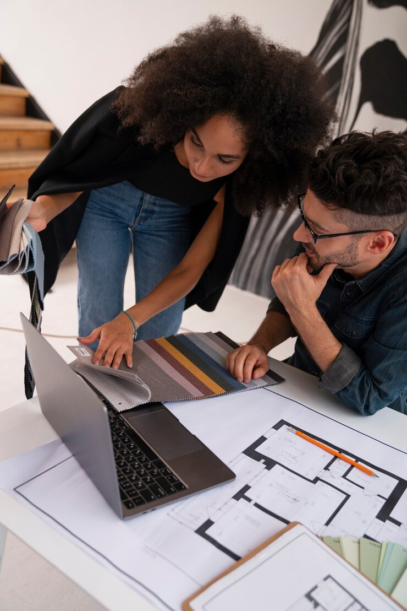

Oferecemos uma gama de serviços pensados para acolher cada etapa da sua jornada arquitetônica, do sonho ao alicerce, do traço ao acabamento:
Projetos Arquitetônicos Residenciais
Criamos lares que refletem quem você é. Espaços onde o cotidiano ganha beleza, conforto e funcionalidade. Cada centímetro pensado para acolher sua história.
Projetos Comerciais e Corporativos
Desenhamos ambientes que inspiram produtividade, fluidez e identidade de marca. Arquitetura que comunica valores, estimula conexões e eleva experiências.
Consultoria e Assessoria Técnica
Orientamos decisões com precisão e sensibilidade. Ajudamos a traduzir desejos em soluções práticas, seguras e viáveis, respeitando prazos, normas e orçamentos.
Design de Interiores
Harmonia entre estética e uso. Criamos ambientes internos com alma, que combinam textura, cor e mobiliário com o estilo de vida de cada cliente.
Regularização de Imóveis
Descomplicamos o que parece burocrático. Atuamos na legalização de obras e imóveis, garantindo tranquilidade e conformidade com os órgãos públicos.
Acompanhamento de Obras
Porque um bom projeto merece ser bem executado. Acompanhamos o passo a passo da construção com olhar técnico e zelo, garantindo que a visão se torne realidade.
Bem vindo
Nossos projetos vão além do concreto e do aço, eles contam histórias,
abraçam a funcionalidade e respiram beleza.
Explore, inspire-se e descubra como podemos transformar suas ideias em
realidade.

Quem somos
Nascemos da união
entre técnica e sensibilidade, entre cálculo exato e intuição
criativa.
Somos arquitetos da possibilidade, desenhistas do espaço e
do tempo. Em cada planta, há mais que medidas — há memórias por vir,
histórias esperando um lugar para acontecer.
Nosso propósito é
transformar ideias em formas, desejos em estruturas. Acreditamos que
a arquitetura vai além das paredes,ela molda sentimentos, inspira
vidas, acolhe jornadas. Trabalhamos com o concreto, mas somos
movidos pelo etéreo — pela beleza que nasce do equilíbrio entre
forma e função.
Do esboço à realidade, caminhamos ao lado de nossos
clientes, compreendendo seus sonhos como se fossem nossos. Cada
projeto é único, como cada vida que nele se desenrola. Somos um
ateliê de visões. Um estúdio onde a luz dança com os espaços, onde a
matéria respeita o espírito do lugar.
Somos arquitetura com alma.
